Architecture and Structure
Below is a clear, structured explanation of a Feedforward Neural Network (FNN) - focusing on
architecture, structure, and math, without framework-specific noise.
Feedforward Neural Network (FNN)
A feedforward neural network is the simplest neural network where information flows one direction only:
Input -> Hidden Layers -> Output
No cycles, no memory.


Key takeaway
* Feedforward networks are function approximators
* They map inputs → outputs with learned weights.
Forward Propagation
Below is a clean, math-first explanation of Forward Propagation in a Feedforward Neural Network, step-by-step, exactly what happens from input → output.


Activation Functions
Below is a structured, equation-complete explanation of Activation Functions in a Feedforward Neural Network, focused on why, how, and when to use each.
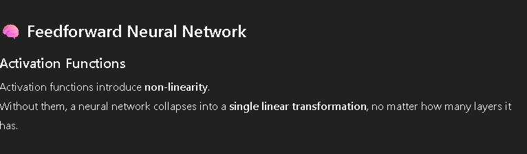
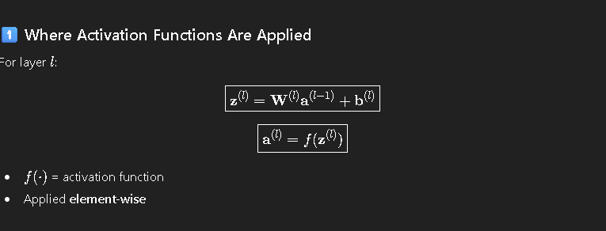
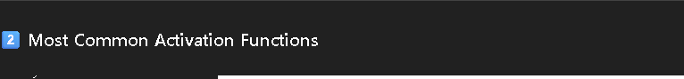
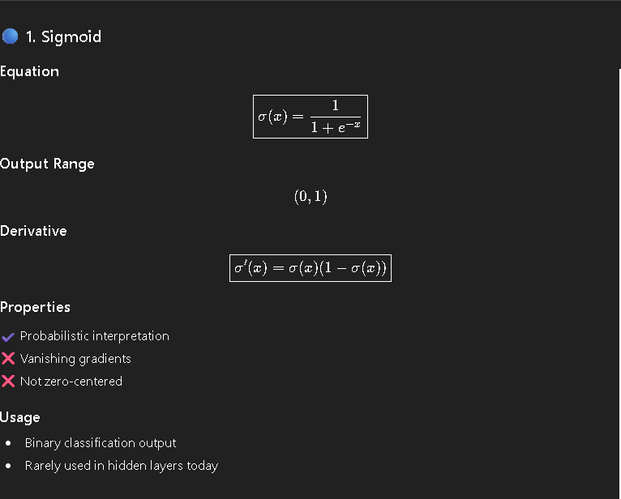
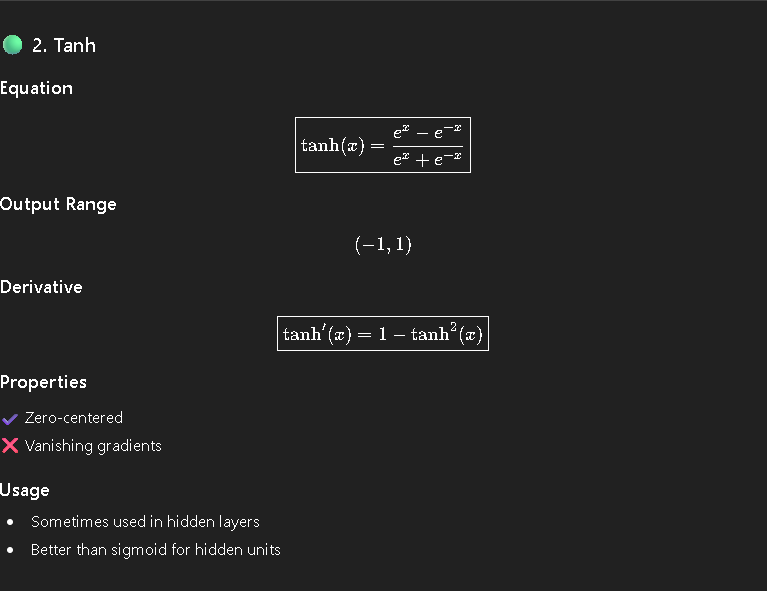
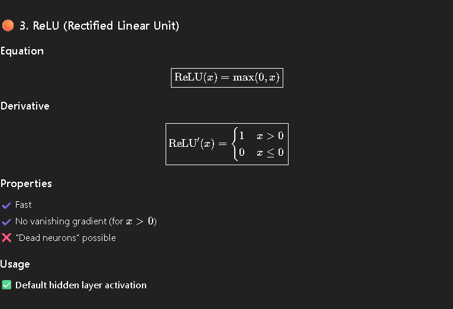
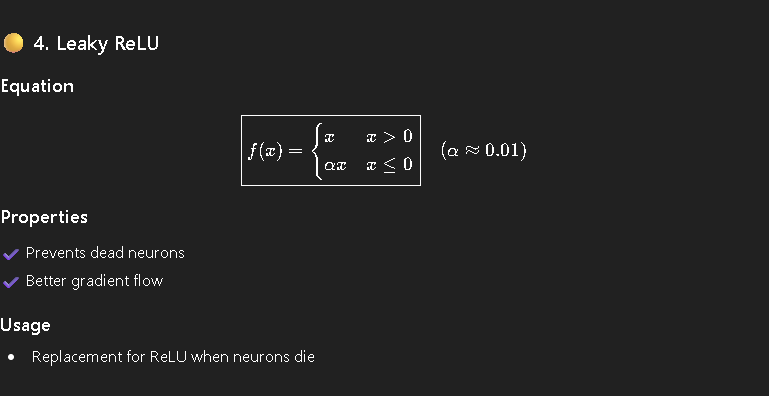
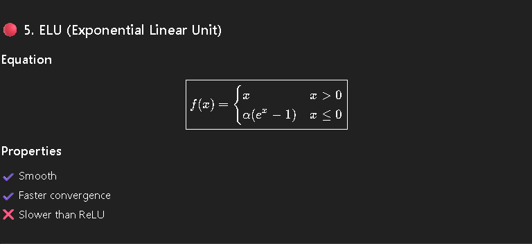

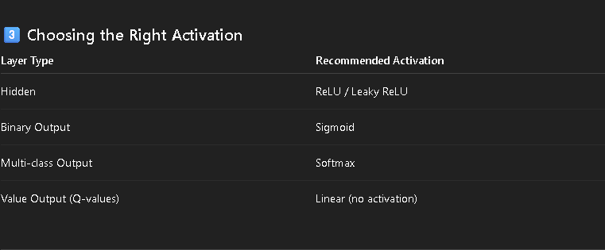
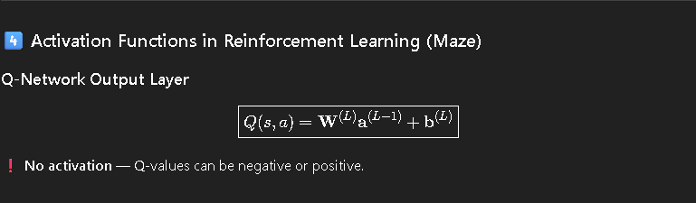
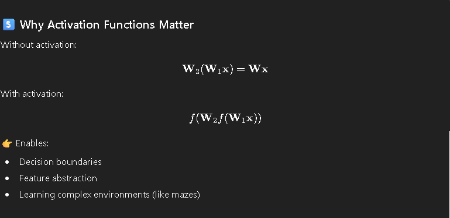
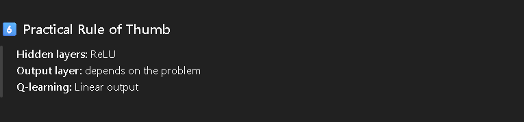
Loss Functions
Below is a clean, complete, equation-driven summary of Loss Functions for a Feedforward Neural Network, with special notes for reinforcement learning / maze problems so you can connect this directly to what you’re building.
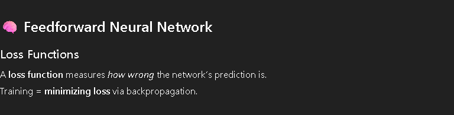
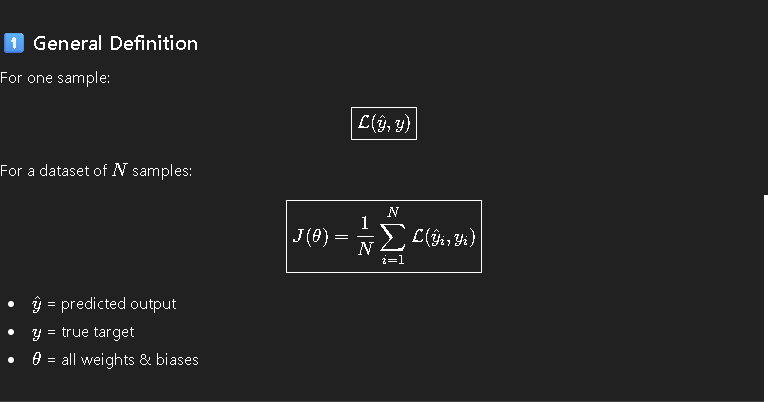
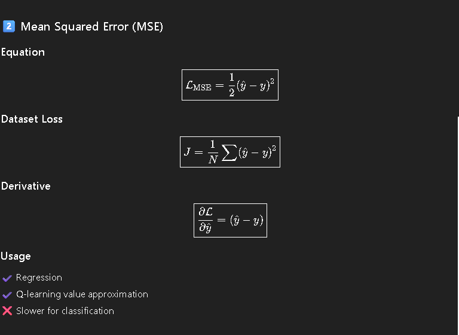

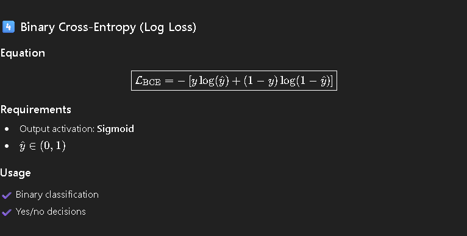
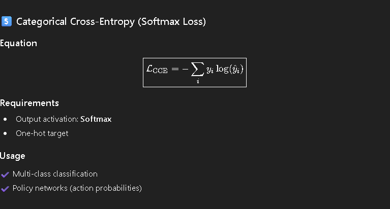
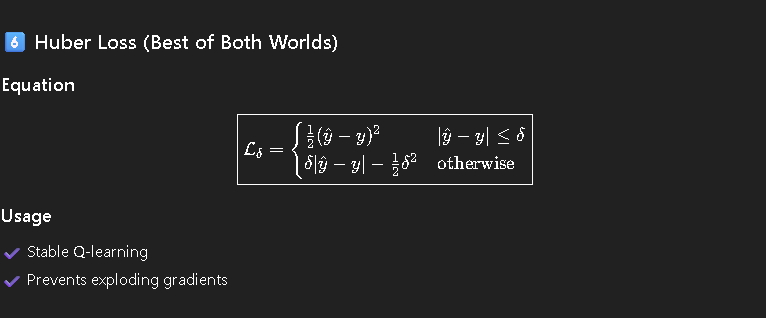
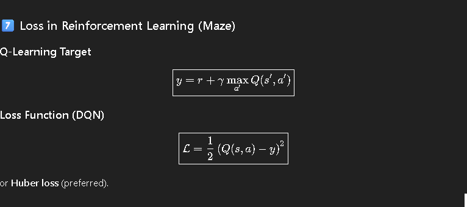
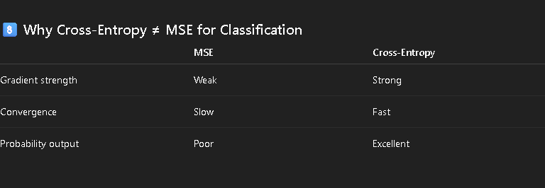
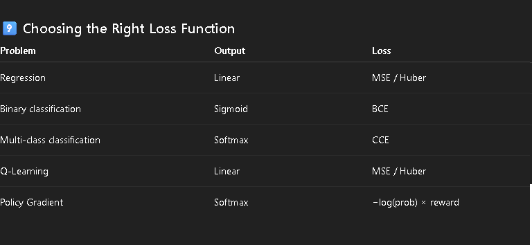
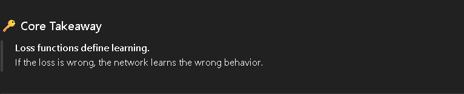
Training Algorithms
Below is a complete, equation-driven, implementation-ready summary of Training Algorithms for Feedforward Neural Networks, written so you can map every equation to code, including how this applies to maze / reinforcement learning.
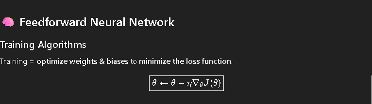
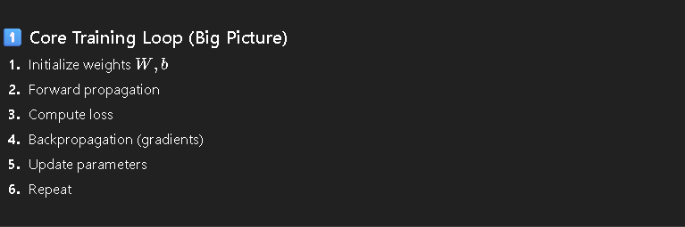
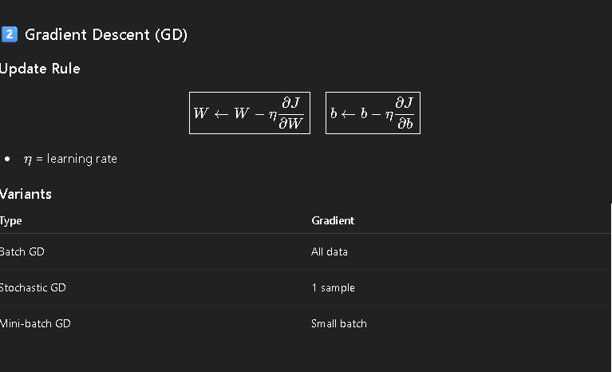
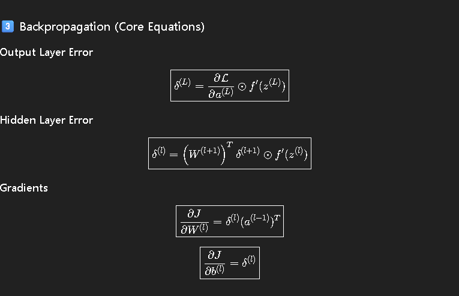
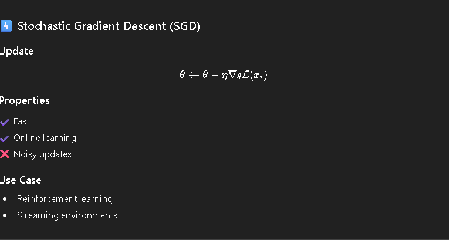
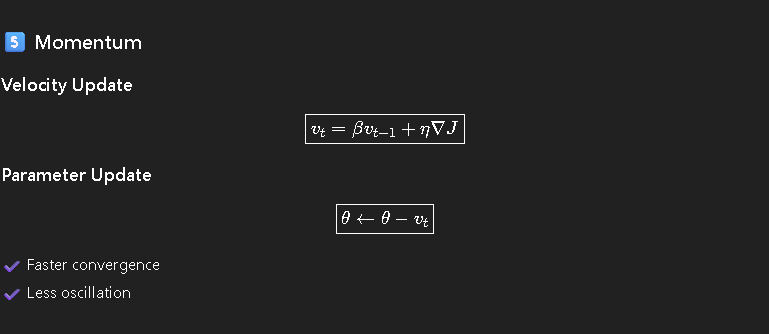
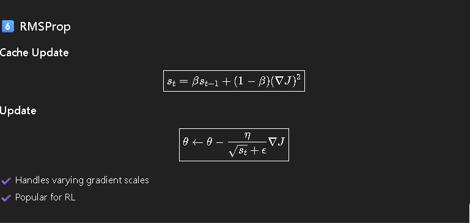
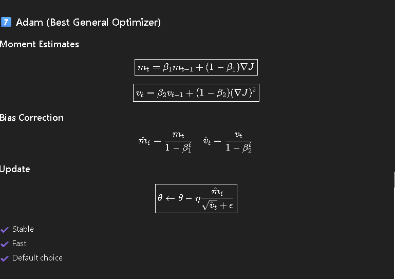
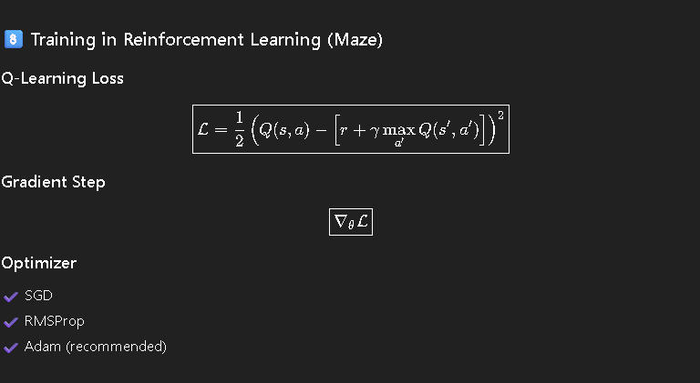
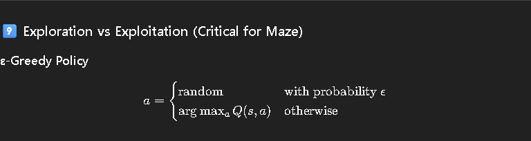
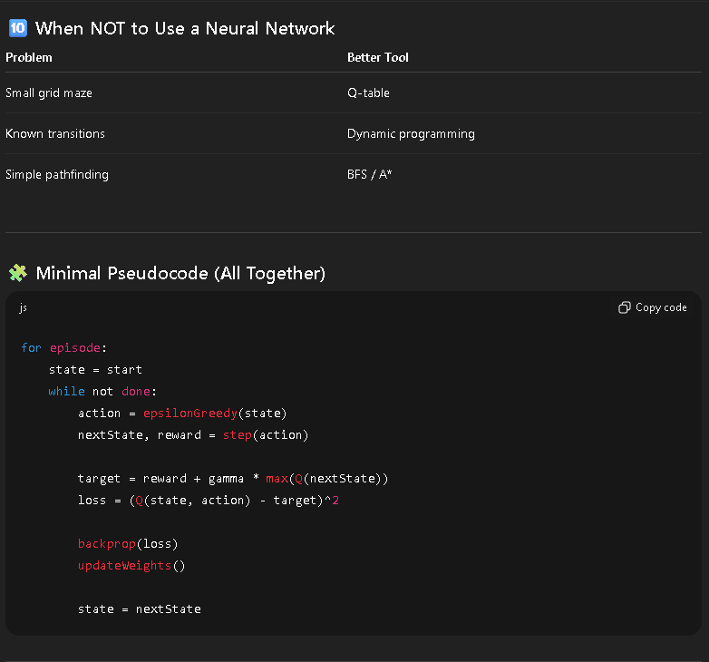
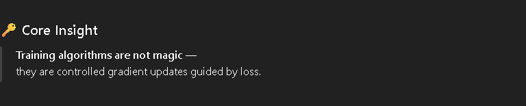